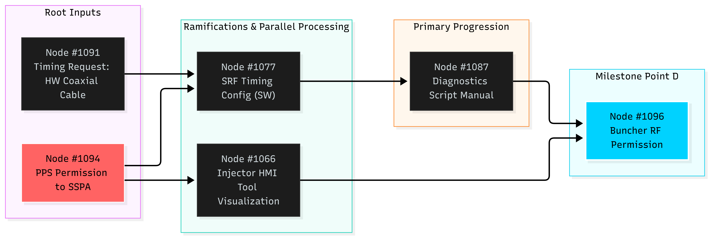

Directed Acyclic Graph: Main Path (1091 → 1077 → 1087 → 1096) with Safety and HMI Ramifications
The path to project is intended as a rigorous network-based directed graph where tasks function as nodes and dependencies form precise operational edges, seamlessly orchestrating synchronization barriers and strategic branch-and-merge confluences to navigate complex systems engineering.
